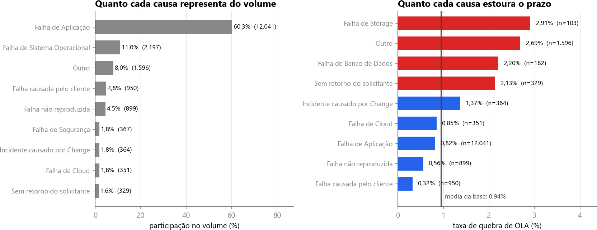

<style>
/* ═══ slide 15 · causas agrupadas ═════════════════════════════════════════════
   Paga o pedido nominal da página 9 do briefing, "agrupar causas recorrentes".
   O slide 14 trata de um código só; este agrupa todos os dezesseis.

   Duas versões caíram antes desta. A primeira tinha o nome à direita e a barra
   espremida; a segunda ordenava tudo por taxa e ficou confusa, porque a
   comparação que interessa some quando as duas listas estão na mesma ordem.

   Esta segue o d30a do deck da Sprint 3, que o dono do projeto mandou olhar: a
   figura traz os dois painéis lado a lado, **um ordenado por volume e outro
   por taxa**, e é justamente a diferença entre as duas ordens que é a
   mensagem. Falha de Aplicação encabeça o da esquerda com 60,3% do volume e
   nem aparece no topo do da direita, onde a taxa dela é 0,82%.

   Figura de prototipos/slides/mvp/deck/figs/rec_causas.png, copiada para
   figs/11_causas.png, 1664x643. Números de data/interim/05_causas.parquet,
   jan a set de 2025, base elegível ao KPI, média de 0,94%.

   Os dois cartões do pé são as duas pontas da comparação, com as duas
   prioridades em cada um, como manda a regra 10.
   ══════════════════════════════════════════════════════════════════════════ */
.cau .body{padding-top:14px}
.cau .tt{font-size:46px;letter-spacing:-1.7px}
.cau .tt em{font-style:normal;color:var(--accent)}
/* a figura tem 1664x643: em largura cheia ela passa da faixa e sobe por cima
   do texto. Presa pela altura do cartão, ela encolhe até caber. */
.cau .cena{flex:1;display:flex;align-items:stretch;margin-top:14px;min-height:0}
.cau .quadro{width:100%;display:flex;align-items:center;justify-content:center;
  padding:14px 20px}
.cau .fig{display:block;max-width:100%;max-height:100%;width:auto}

/* as duas pontas da comparação */
.cau .pontas{display:grid;grid-template-columns:1fr 1fr;gap:20px;margin-top:16px}
.cau .cd{display:grid;grid-template-columns:1fr auto auto;align-items:center;gap:0 26px;
  border-radius:16px;padding:18px 24px}
.cau .cd.vol{background:#F1F5FB;border:1px solid #DCE4EF}
.cau .cd.risco{background:#FCECEC;border:1px solid #F6CFCF}
.cau .cd .k{font-size:11px;font-weight:700;letter-spacing:1.9px;text-transform:uppercase;
  color:var(--tx2);grid-column:1 / -1}
.cau .cd .nm{font-size:20px;font-weight:800;letter-spacing:-.4px;color:var(--head);
  margin-top:8px}
.cau .cd .nm small{display:block;font-size:12.5px;font-weight:400;color:#5A6779;
  margin-top:5px}
.cau .cd .par{text-align:right;margin-top:8px}
.cau .cd .par b{display:block;font-size:26px;font-weight:900;letter-spacing:-1px;
  line-height:1;font-variant-numeric:tabular-nums}
.cau .cd .par span{display:block;font-size:11px;color:var(--tx2);margin-top:5px;
  letter-spacing:1.2px;text-transform:uppercase}
.cau .cd.vol .par.a b{color:#5B6879} .cau .cd.vol .par.b b{color:var(--good)}
.cau .cd.risco .par.a b{color:#67717F} .cau .cd.risco .par.b b{color:var(--bad)}

.cau .fecho{display:flex;align-items:flex-start;gap:12px;margin-top:auto;padding-top:16px;
  border-top:1px solid #DCE4EF;font-size:16px;line-height:1.45;color:var(--tx)}
.cau .fecho .ic{width:20px;height:20px;color:var(--accent);margin-top:2px;flex-shrink:0}
.cau .fecho b{color:var(--head);font-weight:700}
</style>

<section class="slide light cau" data-slide="15" data-var="b" data-quem="ana">
  <div class="mesh"></div><div class="grid-bg"></div>
  <div class="hd">
    <div class="bi"><svg viewBox="0 0 28 28" fill="none"><path d="M6 22L12 14L16 17L22 8" stroke="#fff" stroke-width="2.2" stroke-linecap="round" stroke-linejoin="round"/><circle cx="22" cy="8" r="3" stroke="#3B82F6" stroke-width="1.5"/><circle cx="22" cy="8" r="1.2" fill="#3B82F6"/></svg></div>
    <div class="bn">Cronos</div><span class="bt">BANCA FINAL &middot; 15/09/2026</span>
    <div class="tag">Seção 02 &middot; agrupar causas recorrentes</div>
  </div>
  <div class="body">
    <span class="eb"><span class="rv" style="--d:240ms">Exigência do desafio &middot; agrupar causas recorrentes</span></span>
    <h1 class="tt"><span class="mask" style="--d:340ms"><span>Volume e <em>taxa de quebra de OLA</em> por causa de fechamento</span></span></h1>

    <div class="cena">
      <div class="quadro cartao rv3" style="--d:760ms">
        
      </div>
    </div>

    <div class="pontas">
      <div class="cd vol rv" style="--d:1200ms">
        <span class="k">A maior em volume</span>
        <span class="nm">Falha de Aplicação<small>12.041 incidentes &middot; 0,88% na P2 e 0,82% na P3</small></span>
        <span class="par a"><b>60,3%</b><span>do volume</span></span>
        <span class="par b"><b>0,82%</b><span>taxa de quebra</span></span>
      </div>
      <div class="cd risco rv" style="--d:1340ms">
        <span class="k">A maior em risco</span>
        <span class="nm">Falha de Storage<small>103 incidentes &middot; 4,35% na P3 e nenhuma quebra na P2</small></span>
        <span class="par a"><b>0,5%</b><span>do volume</span></span>
        <span class="par b"><b>2,91%</b><span>taxa de quebra</span></span>
      </div>
    </div>

    <div class="fecho rv" style="--d:1500ms">
      <svg class="ic" viewBox="0 0 24 24"><circle cx="12" cy="12" r="9.4"/><path d="M12 7.6v4.8"/><path d="M12 16.2h.01"/></svg>
      <span>A causa que ocupa <b>seis de cada dez</b> incidentes é a que menos estoura, e a que mais estoura é meio por cento da base. Priorizar por volume é atender o que já está sob controle.</span>
    </div>
  </div>
  <div class="ft"></div>
</section>
